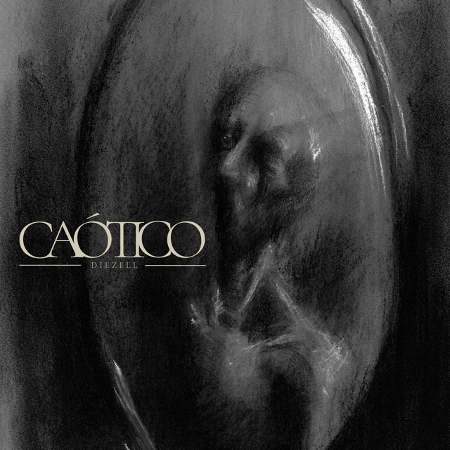

Escuchar
Primero INSANIA, luego Caótico, luego los sencillos.
Adelantos de 1:30 · con permiso de la banda
Reproductor
Escucha un adelanto de 1:30 de cada canción, directo en la web. La canción completa está en Spotify y YouTube, para apoyar a la banda.
Se acabó el adelanto
Suspensión… sigue completa aquí, para apoyar a la banda:
Cargando las 27 canciones…
Adelantos de 90 segundos con permiso de Diezell. El catálogo completo sigue abajo en Spotify.

INSANIA · 2025
Portada oficial
Spotify ↗
Segundo álbum · 01 / 02
INSANIA — 2025
Diez canciones sobre vulnerabilidad, culpa, nostalgia y duelo.
“Hace frío aquí, no pude salir / Cuesta respirar hacia el final” — Suspensión… · Letra completa ↗
- 01Suspensión...3:58
- 02Más Que Ayer, Menos Que Mañana3:29
- 03Días Felices: Los Lunes3:04
- 04Tus Flores Fueron Entregadas3:53
- 05El Último Soldado En Pie4:22
- 06El Monstruo De Gizmo3:41
- 07La Paradoja De Tennessee3:43
- 08Resiliencia3:50
- 09Donde Nada Puede Malir Sal3:44
- 10Una Triste Mañana de Noviembre3:02
“Detrás de INSANIA hay también un proceso largo e íntimo: un año entero de reunirse noche tras noche para componer el disco, puliendo cada idea hasta darle forma a este concepto tan ambicioso.”

Caótico · 2023
Portada oficial
Spotify ↗
Primer álbum · 02 / 02
Caótico — 2023
Punk rock. Sus influencias, según Puro Rock Puro (5 oct 2023), “nos pueden transportar a los dosmiles”, a una generación que no vivió el auge del “emo”.
“Tuve cien / Cien maneras de explicarlo todo, y fallé / Soy experto en arruinarlo todo” — El Cuento De Aquel Imperfecto Ser · Letra completa ↗
- 01El Cuento De Aquel Imperfecto Ser3:21
- 02Conmiseración3:40
- 03Martes Con Aroma A Domingo3:14
- 04Sin Destinatario3:09
- 05Al Parecer Eso Parece3:28
- 06Una, Dos O Tres Lágrimas Permitidas4:03
- 07A Golpe de Mar, Pecho Sereno3:31
- 08De Espaldas3:40
- 09Mi Más Sentido Pésame (Murió El Sentido Común)3:06
- 10Demencia3:06
- 11El Último Recuerdo De La Noche3:31
“El álbum trae canciones que nos pueden llenar de despecho, desilusión, o una forma de sacar todo aquel dolor interno que llevamos en el alma.”
Fuera de los discos
Sencillos
Desliza para verlos todos.